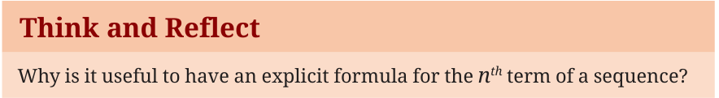
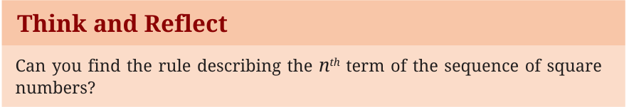

Using the notation t_{n} (or s_{n} or u_{n}) we can write an explicit rule for
the term in the n position of a sequence, that is, the n term. An explicit formula uses the term’s position number, n, to calculate its value.
th th
Example 1: Consider the expression \(u_{n} = 2n - 1\). This states that the
n term of the sequence is given by the rule \(2n - 1\). When we substitute 1, 2, 3, ... for n in the expression \(2n - 1\), we get \(u_{1}= 2 \times 1 - 1 = 1\), \(u_{2} =2 \times 2 - 1 = 3\),
th
\(u_{3} = 2 \times 3 - 1 = 5\), etc.
Thus, \(u_{n} = 2n - 1\) is the explicit rule for the n term of the sequence of odd numbers.

Using an explicit formula, we can find the 20 term, the 53 term,
the 300 term or any term of the sequence directly by just substituting the appropriate value of n. If we have an explicit formula, we can find the value of a term without having to know the value of previous terms!
th
Exercise: Using the explicit rule \(u_{n} = 2n - 1\), find the 53 term, the
108 term, and the 1170 term of the odd number sequence. The explicit rule is useful in other ways too. We can use it to check if a certain number is a term of a sequence and also find the position of the term. For example, consider the odd number 137. To find which position it occupies in the odd number sequence, we need to solve the
th th
equation \(u_{n} = 137\). This means \(2n - 1 = 137\) or \(n = 69\). Thus 137 is the 69 term of the odd number sequence. Example 2: As another example, consider the sequence that is generated by the explicit formula \(s_{n} = 5n - 2\). Can you write the first
6 terms of this sequence? What is the 100 term? The 1000 term? Let us check if the numbers 308 and 473 are terms of this sequence. We solve \(s_{n} = 308\), that is, \(5n - 2 = 308\). This leads to \(5n = 310\) or
\(n = 62\). Thus 308 is the 62 term of the sequence. Similarly solving \(5n - 2 = 471\) leads to \(5n = 473\), \(n = 94.6\). Since 94.6 is not a natural number, we can conclude that 471 is not a term of the sequence. Can you explain why we need n to be a natural number?
nd

Here is the sequence of the first ten prime numbers: 2, 3, 5, 7, 11, 13, 17, 19, 23, 29. Do you see any pattern in this sequence? Can you think of
a rule that can predict the next few prime numbers? Exercise: Consider the expression \(t_{n} = 3n - 7\).
- (i)Find its first, second, third, 12 , 18 and 50 terms.
- (ii)Which term of the sequence is 332?
- (iii)Is 557 a term of this sequence? Why or why not?